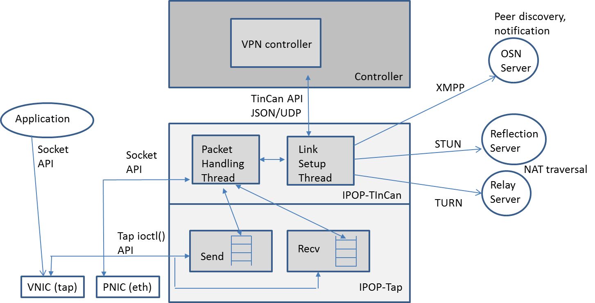

Architecture overview

IPOP’s architecture and design have evolved since the project’s inception from one based on a structured P2P library (Brunet) connecting all peers into a global overlay, to the current design based on TinCan links that connect peers to trusted peers where trust relationships are extracted from online social network providers. At its core, IPOP leverages existing technologies (Jingle/WebRTC) and standards (STUN, TURN, XMPP) to tunnel IP packets over P2P links between two computers – even when they are both behind firewalls and/or Network Address Translators (NATs). Users can choose to deploy their VPNs on existing public XMPP infrastructure such as Google Hangouts or their own personal XMPP server.
The current IPOP architecture has the following layers and modules:
Discovery and notification layer: IPOP peers discover and notify other peers and exchange endpoint information using an XMPP overlay. This is used for (small) notification messages, and allows users to connect to various existing XMPP-compliant social network infrastructures (e.g. Google’s Hangout, or a private ejabberd service)
TinCan links and datapath layer: IPOP peers establish private P2P links directly to other peers using the TinCan links by leveraging Google’s libjingle library. In contrast to XMPP notifications, the “TinCan” links carry the bulk of the communication directly between users, without going through a centralized gateway. The libjingle library provides support for NAT traversal through standards including STUN (direct P2P tunnels over UDP) and TURN (tunnels through a third-party relay when direct connections fail), allowing TinCan links to work across NAT-constrained devices. Virtual network interfaces (“tap” devices) provide the binding between each host to an IPOP overlay, by capturing, encapsulating and sending packets from the O/S of one endpoint to the other endpoint over TinCan links.
Policy/control layer: The datapath layer at each peer is configured and managed by a separate controller module, which is responsible for creating/destroying TinCan links and forwarding packets over multiple links if necessary. A controller module (e.g. a Python program) uses a JSON-over-UDP API exposed by the TinCan datapath to program and receive notifications from the IPOP-TinCan module, allowing flexibility in the implementation of various user-defined networking policies.
These layers are implemented by the modules depicted in the above figure, as described below:
IPOP-Tap: this is the lowest-layer module. It interfaces with a virtual network interface (VNIC) to be able to pick/inject IP packets from/to the virtual network. It is responsible for maintaining send/receive queues, and using the system call interface of the O/S (e.g. Unix ioctl()) to configure the network and read/write from a virtual network interface (tap device).
IPOP-TinCan: this is the module that handles the communication primitive used to link two endpoints and tunnel traffic – TinCan links. Specifically, it handles the setup/tear-down of a link (link setup thread), and the encapsulation, sending and receiving of tunneled IP packets over these links (packet handling thread). The link setup thread uses external services through the XMPP protocol to discover and notify peers for which TinCan links are to be formed, and STUN/TURN protocols to establish links between nodes that are constrained by NATs (Network Address Translators). It also exposes a management API to the controller module. The packet handling thread uses the IPOP-tap module to interact with the virtual network, and the Sockets API to send/receive tunneled packets through the physical Internet.
Controller: this module is responsible for configuring and controlling the setup and management of an overlay of IPOP-TinCan links, using the API exposed by the IPOP-TinCan module. The controller is responsible for establishing the policies for topology creation of an IPOP overlay (e.g. all-to-all, social), and determining when links are created/destroyed (e.g. when a peer node’s presence is detected, or on-demand triggered by IP traffic), using the IPOP-TinCan mechanisms exposed by its API to implement the policies. The two major controllers currently implemented are GroupVPN (for groups of nodes organized as clusters), and SocialVPN (for end users connected to their social peers).